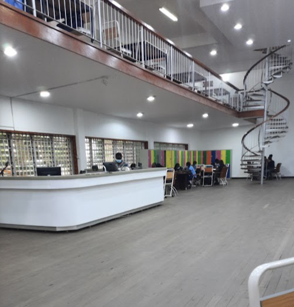
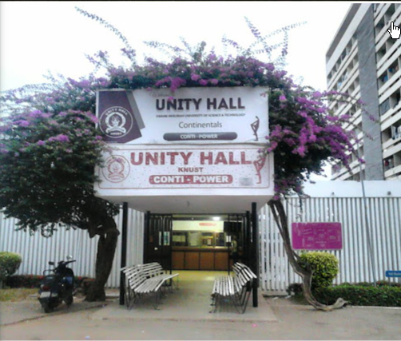
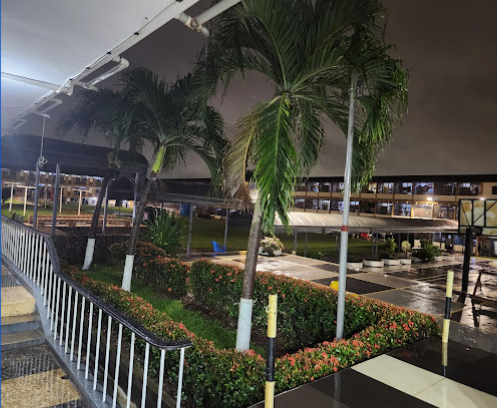
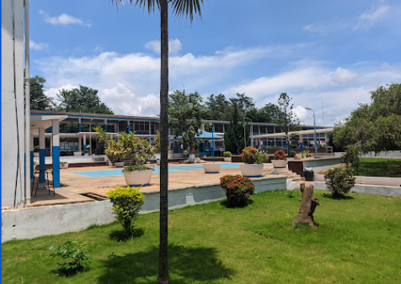

-

Prempeh II Library
Located at KNUST
-

Unity Hall
Largest all-male hall in KNUST
-

Katanga Hall
Famous for its traditions
-
 Republic Hall
Republic Hall
Popular mixed hall
-

Queens Hall
Known for its vibrant community
-
Casely Hayford Hall
Named after J.E. Casely Hayford